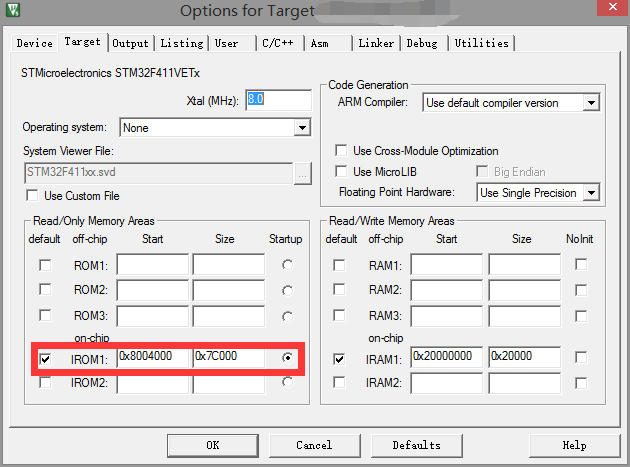
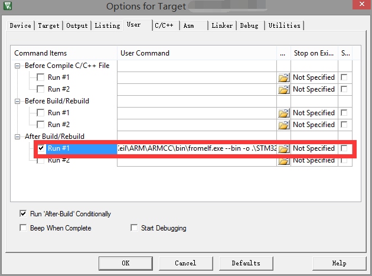

首先，我需要声明一下，本文所移植的IAP程序仅能用作参考，虽然加入了ymodem的通讯协议，提高了程序文件下载过程中的稳定性，但是由于移植的代码，本身就是示例程序，所以个人不建议直接用在工程中，但是可以作为工程测试、调试和个人DIY所用。
一、准备移植程序和工具
我们在移植AN4657到STM32F411VET6的过程中主要用到以下程序和工具：
AN4657-STM32Cube_IAP_using_UART\Projects\STM3210C_EVAL\IAP_Main\Inc
AN4657-STM32Cube_IAP_using_UART\Projects\STM3210C_EVAL\IAP_Main\Src
二、拷贝需要的文件到工程目录下
1、解压缩通过下载得到的AN4657压缩包。
2、拷贝路径（AN4657-STM32Cube_IAP_using_UART\Projects\STM3210C_EVAL\IAP_Main\Inc）中的common.h、flash_if.h、menu.h、ymodem.h到我们自己的工程路径下的Inc文件夹中。
3、拷贝路径（AN4657-STM32Cube_IAP_using_UART\Projects\STM3210C_EVAL\IAP_Main\Src）中的common.c、flash_if.c、menu.c、ymodem.c到我们自己的工程路径下的Src文件夹中，并在keil中添加相应的文件。
三、修改串口的基本设置
串口的基本设置在STM32Cube可以进行设置，并生成相应的设置代码，但在我们的移植文件中需要用到串口设置，故我们需要在common.c、menu.c、ymodem.c三个文件中进行修改，我的示例代码是用USART1作为演示。
common.c修改部分如下所示：
1
2
3
4
5
6
7
8
9
10
11
12
13
14
15
16
17
18
19
20
21
22 | /** @addtogroup STM32F4xx_IAP_Main
* @{
*/
/* Includes -------------------------------------------------------------*/
//根据实际情况修改引用的头文件，在原先程序中删除main.h的引用，加入stm32f4xx_hal.h和
//usart.h的引用。
#include "common.h"
#include "stm32f4xx_hal.h"
#include "usart.h"
/* Private typedef ------------------------------------------------------*/
/* Private define -------------------------------------------------------*/
//为了修改方便，直接对UartHandle进行#define操作，镜像到实际使用的串口配置
//文件
#ifndef UartHandle
#define UartHandle huart1
#endif
/* Private macro --------------------------------------------------------*/
/* Private variables ----------------------------------------------------*/
/* Private function prototypes ------------------------------------------*/
/* Private functions ----------------------------------------------------*/
|
menu.c修改部分如下所示：
1
2
3
4
5
6
7
8
9
10
11
12
13
14
15
16
17
18
19
20
21
22
23 | /** @addtogroup STM32F4xx_IAP
* @{
*/
/* Includes -------------------------------------------------------------*/
//根据实际情况修改引用的头文件，在原先程序中删除main.h的引用，加入stm32f4xx_hal.h和
//usart.h的引用。
#include "common.h"
#include "flash_if.h"
#include "menu.h"
#include "ymodem.h"
#include "stm32f4xx_hal.h"
#include "usart.h"
/* Private typedef ------------------------------------------------------*/
/* Private define -------------------------------------------------------*/
//为了修改方便，直接对UartHandle进行#define操作，镜像到实际使用的串口配置
//文件
#ifndef UartHandle
#define UartHandle huart1
#endif
/* Private macro --------------------------------------------------------*/
/* Private variables ----------------------------------------------------*/
|
ymodem.c修改部分如下所示：
1
2
3
4
5
6
7
8
9
10
11
12
13
14
15
16
17
18
19
20
21
22
23
24
25
26 | /** @addtogroup STM32F4xx_IAP
* @{
*/
/* Includes -------------------------------------------------------------*/
//根据实际情况修改引用的头文件，在原先程序中删除main.h的引用，加入stm32f4xx_hal.h和
//usart.h的引用。
#include "flash_if.h"
#include "common.h"
#include "ymodem.h"
#include "string.h"
#include "menu.h"
#include "stm32f4xx_hal.h"
#include "usart.h"
/* Private typedef ------------------------------------------------------*/
/* Private define -------------------------------------------------------*/
//为了修改方便，直接对UartHandle进行#define操作，镜像到实际使用的串口配置
//文件
#ifndef UartHandle
#define UartHandle huart1
#endif
#define CRC16_F /* activate the CRC16 integrity */
/* Private macro --------------------------------------------------------*/
/* Private variables ----------------------------------------------------*/
|
P.S.
1、common.h、menu.h、ymodem.h基本不需要任何修改，直接就可以用。
2、如果使用32F411EDISCOVERY，请您注意不要使用默认的USART1的IO设置，需要更改为
PB6、PB7，才可以正常使用，默认的TX引脚上接了一个uF级的电容，我因为这个事情调试了很长时间。
三、修改FLASH操作函数及其定义
在整个移植过程中，重头戏就是对flash_if.h和flash_if.c的移植，里面涉及到很多 处修改，大部分修改是因为M4系列的MCU对FLASH的操作，没有页（Page）的概念，只有扇区（Sector）的操作函数造成的。
所以，综上所述需要先将各种Page（PAGE、page）换成Sector，这样基本上可以解决掉一批错误。
flash_if.h修改后如下所示：
1
2
3
4
5
6
7
8
9
10
11
12
13
14
15
16
17
18
19
20
21
22
23
24
25
26
27
28
29
30
31
32
33
34
35
36
37
38
39
40
41
42
43
44
45
46
47
48
49
50
51
52
53
54
55
56
57
58
59
60
61
62
63
64
65
66
67
68
69
70
71
72
73
74
75
76
77 | /* Define to prevent recursive inclusion --------------------------------*/
#ifndef __FLASH_IF_H
#define __FLASH_IF_H
/* Includes -------------------------------------------------------------*/
//修改引用的头文件为F4的
#include "stm32f4xx_hal.h"
/* Exported types -------------------------------------------------------*/
/* Exported constants ---------------------------------------------------*/
/* Base address of the Flash sectors */
//定义扇区名和地址之间的关系，方便根据地址获取扇区的编号
#define ADDR_FLASH_SECTOR_0 ((uint32_t)0x08000000) /* Base @ of Sector 0, 16 Kbyte */
#define ADDR_FLASH_SECTOR_1 ((uint32_t)0x08004000) /* Base @ of Sector 1, 16 Kbyte */
#define ADDR_FLASH_SECTOR_2 ((uint32_t)0x08008000) /* Base @ of Sector 2, 16 Kbyte */
#define ADDR_FLASH_SECTOR_3 ((uint32_t)0x0800C000) /* Base @ of Sector 3, 16 Kbyte */
#define ADDR_FLASH_SECTOR_4 ((uint32_t)0x08010000) /* Base @ of Sector 4, 64 Kbyte */
#define ADDR_FLASH_SECTOR_5 ((uint32_t)0x08020000) /* Base @ of Sector 5, 128 Kbyte */
#define ADDR_FLASH_SECTOR_6 ((uint32_t)0x08040000) /* Base @ of Sector 6, 128 Kbyte */
#define ADDR_FLASH_SECTOR_7 ((uint32_t)0x08060000) /* Base @ of Sector 7, 128 Kbyte */
/* Error code */
enum
{
FLASHIF_OK = 0,
FLASHIF_ERASEKO,
FLASHIF_WRITINGCTRL_ERROR,
FLASHIF_WRITING_ERROR,
FLASHIF_PROTECTION_ERRROR
};
/* protection type */
enum{
FLASHIF_PROTECTION_NONE = 0,
FLASHIF_PROTECTION_PCROPENABLED = 0x1,
FLASHIF_PROTECTION_WRPENABLED = 0x2,
FLASHIF_PROTECTION_RDPENABLED = 0x4,
};
/* protection update */
enum {
FLASHIF_WRP_ENABLE,
FLASHIF_WRP_DISABLE
};
/* Define the address from where user application will be loaded.
Note: the 1st sector 0x08000000-0x08003FFF is reserved for the IAP code */
//根据实际的片内Flash大小修改结束地址，并删除不用的宏定义
#define APPLICATION_ADDRESS (uint32_t)0x08004000 /* Start user code address */
/* Notable Flash addresses */
#define USER_FLASH_END_ADDRESS (uint32_t)0x0807FFFF
/* Define the user application size */
#define USER_FLASH_SIZE (USER_FLASH_END_ADDRESS - APPLICATION_ADDRESS + 1) /* Small default template application */
/* Exported macro -------------------------------------------------------*/
/* ABSoulute value */
#define ABS_RETURN(x,y) ((x) < (y)) ? ((y)-(x)) : ((x)-(y))
/* Get the number of sectors from where the user program will be loaded */
#define FLASH_SECTOR_NUMBER ((uint32_t)(ABS_RETURN(APPLICATION_ADDRESS,FLASH_START_BANK1))>>12)
/* Compute the mask to test if the Flash memory, where the user program will be
loaded, is write protected */
#define FLASH_PROTECTED_SECTORS (~(uint32_t)((1 << FLASH_SECTOR_NUMBER) - 1))
/* Exported functions --------------------------------------------------*/
void FLASH_If_Init(void);
uint32_t FLASH_If_Erase(uint32_t StartSector);
uint32_t FLASH_If_GetWriteProtectionStatus(void);
uint32_t FLASH_If_Write(uint32_t destination, uint32_t *p_source, uint32_t length);
uint32_t FLASH_If_WriteProtectionConfig(uint32_t modifier);
#endif /* __FLASH_IF_H */
/******************* (C) COPYRIGHT STMicroelectronics *****END OF FILE****/
|
flash_if.c修改后如下所示：
1
2
3
4
5
6
7
8
9
10
11
12
13
14
15
16
17
18
19
20
21
22
23
24
25
26
27
28
29
30
31
32
33
34
35
36
37
38
39
40
41
42
43
44
45
46
47
48
49
50
51
52
53
54
55
56
57
58
59
60
61
62
63
64
65
66
67
68
69
70
71
72
73
74
75
76
77
78
79
80
81
82
83
84
85
86
87
88
89
90
91
92
93
94
95
96
97
98
99
100
101
102
103
104
105
106
107
108
109
110
111
112
113
114
115
116
117
118
119
120
121
122
123
124
125
126
127
128
129
130
131
132
133
134
135
136
137
138
139
140
141
142
143
144
145
146
147
148
149
150
151
152
153
154
155
156
157
158
159
160
161
162
163
164
165
166
167
168
169
170
171
172
173
174
175
176
177
178
179
180
181
182
183
184
185
186
187
188
189
190
191
192
193
194
195
196
197
198
199
200
201
202
203
204
205
206
207
208
209
210
211
212
213
214
215
216
217
218
219
220
221
222
223
224
225
226
227
228
229
230
231
232
233
234
235
236
237
238
239
240
241
242
243
244
245
246
247
248
249
250
251
252
253
254
255
256
257
258 | /** @addtogroup STM32F4xx_IAP
* @{
*/
/* Includes -------------------------------------------------------------*/
#include "flash_if.h"
/* Private typedef ------------------------------------------------------*/
/* Private define -------------------------------------------------------*/
/* Private macro --------------------------------------------------------*/
/* Private variables ----------------------------------------------------*/
/* Private function prototypes ------------------------------------------*/
//增加获取扇区的函数，方便获取扇区编号
static uint32_t GetSector(uint32_t Address);
/* Private functions ----------------------------------------------------*/
/**
* @brief Unlocks Flash for write access
* @param None
* @retval None
*/
void FLASH_If_Init(void)
{
/* Unlock the Program memory */
HAL_FLASH_Unlock();
/* Clear all FLASH flags */
//根据实际的MCU清除FLASH标志位
__HAL_FLASH_CLEAR_FLAG(FLASH_FLAG_EOP | FLASH_FLAG_OPERR | FLASH_FLAG_WRPERR |
FLASH_FLAG_PGAERR | FLASH_FLAG_PGPERR|FLASH_FLAG_PGSERR);
/* Unlock the Program memory */
HAL_FLASH_Lock();
}
/**
* @brief This function does an erase of all user flash area
* @param start: start of user flash area
* @retval FLASHIF_OK : user flash area successfully erased
* FLASHIF_ERASEKO : error occurred
*/
uint32_t FLASH_If_Erase(uint32_t start)
{
//将相关的Page参数均修改为M4的Sector 参数
uint32_t UserStartSector = FLASH_SECTOR_1;
uint32_t NbrOfSector = 0;
uint32_t SectorError = 0;
FLASH_EraseInitTypeDef pEraseInit;
HAL_StatusTypeDef status = HAL_OK;
/* Unlock the Flash to enable the flash control register access *************/
HAL_FLASH_Unlock();
/* Get the sector where start the user flash area */
UserStartSector = GetSector(APPLICATION_ADDRESS);
NbrOfSector = FLASH_SECTOR_7 - UserStartSector + 1;
pEraseInit.TypeErase = FLASH_TYPEERASE_SECTORS;
pEraseInit.Sector = UserStartSector;
pEraseInit.Banks = FLASH_BANK_1;
pEraseInit.NbSectors = NbrOfSector;
pEraseInit.VoltageRange = FLASH_VOLTAGE_RANGE_3;
status = HAL_FLASHEx_Erase(&pEraseInit, &SectorError);
/* Lock the Flash to disable the flash control register access (recommended
to protect the FLASH memory against possible unwanted operation) *********/
HAL_FLASH_Lock();
if (status != HAL_OK)
{
/* Error occurred while Sector erase */
return FLASHIF_ERASEKO;
}
return FLASHIF_OK;
}
/* Public functions -----------------------------------------------------*/
/**
* @brief This function writes a data buffer in flash (data are 32-bit aligned).
* @note After writing data buffer, the flash content is checked.
* @param destination: start address for target location
* @param p_source: pointer on buffer with data to write
* @param length: length of data buffer (unit is 32-bit word)
* @retval uint32_t 0: Data successfully written to Flash memory
* 1: Error occurred while writing data in Flash memory
* 2: Written Data in flash memory is different from expected one
*/
uint32_t FLASH_If_Write(uint32_t destination, uint32_t *p_source, uint32_t length)
{
uint32_t i = 0;
/* Unlock the Flash to enable the flash control register access *************/
HAL_FLASH_Unlock();
for (i = 0; (i < length) && (destination <= (USER_FLASH_END_ADDRESS-4)); i++)
{
/* Device voltage range supposed to be [2.7V to 3.6V], the operation will
be done by word */
if (HAL_FLASH_Program(FLASH_TYPEPROGRAM_WORD, destination, *(uint32_t*)(p_source+i)) == HAL_OK)
{
/* Check the written value */
if (*(uint32_t*)destination != *(uint32_t*)(p_source+i))
{
/* Flash content doesn't match SRAM content */
return(FLASHIF_WRITINGCTRL_ERROR);
}
/* Increment FLASH destination address */
destination += 4;
}
else
{
/* Error occurred while writing data in Flash memory */
return (FLASHIF_WRITING_ERROR);
}
}
/* Lock the Flash to disable the flash control register access (recommended
to protect the FLASH memory against possible unwanted operation) *********/
HAL_FLASH_Lock();
return (FLASHIF_OK);
}
/**
* @brief Returns the write protection status of application flash area.
* @param None
* @retval If a sector in application area is write-protected returned value is a combinaison
of the possible values : FLASHIF_PROTECTION_WRPENABLED, FLASHIF_PROTECTION_PCROPENABLED, ...
* If no sector is write-protected FLASHIF_PROTECTION_NONE is returned.
*/
uint32_t FLASH_If_GetWriteProtectionStatus(void)
{
uint32_t ProtectedSector = FLASHIF_PROTECTION_NONE;
FLASH_OBProgramInitTypeDef OptionsBytesStruct;
/* Unlock the Flash to enable the flash control register access ********/
HAL_FLASH_Unlock();
/*Check if there are write protected sectors inside the user flash area*/
HAL_FLASHEx_OBGetConfig(&OptionsBytesStruct);
/* Lock the Flash to disable the flash control register access (recommended
to protect the FLASH memory against possible unwanted operation) *********/
HAL_FLASH_Lock();
/* Get Sectors already write protected *********************************/
//后面的保护区域，没有看懂，所以直接屏蔽掉了
ProtectedSector = ~OptionsBytesStruct.WRPSector;
/* Check if desired Sectors are already write protected ****************/
if(ProtectedSector != 0)
{
/* Some sectors inside the user flash area are write protected */
return FLASHIF_PROTECTION_WRPENABLED;
}
else
{
/* No write protected sectors inside the user flash area */
return FLASHIF_PROTECTION_NONE;
}
}
/**
* @brief Configure the write protection status of user flash area.
* @param protectionstate : FLASHIF_WRP_DISABLE or FLASHIF_WRP_ENABLE the protection
* @retval uint32_t FLASHIF_OK if change is applied.
*/
uint32_t FLASH_If_WriteProtectionConfig(uint32_t protectionstate)
{
uint32_t ProtectedSector = 0x0;
FLASH_OBProgramInitTypeDef config_new, config_old;
HAL_StatusTypeDef result = HAL_OK;
/* Get Sectors write protection status *********************************/
HAL_FLASHEx_OBGetConfig(&config_old);
/* The parameter says whether we turn the protection on or off */
config_new.WRPState = (protectionstate == FLASHIF_WRP_ENABLE ? OB_WRPSTATE_ENABLE : OB_WRPSTATE_DISABLE);
/* We want to modify only the Write protection */
config_new.OptionType = OPTIONBYTE_WRP;
/* No read protection, keep BOR and reset settings */
config_new.RDPLevel = OB_RDP_LEVEL_0;
config_new.USERConfig = config_old.USERConfig;
/* Get Sectors already write protected *********************************/
//后面的保护区域，没有看懂，所以直接屏蔽掉了
ProtectedSector = config_old.WRPSector;
/* Unlock the Flash to enable the flash control register access *******/
HAL_FLASH_Unlock();
/* Unlock the Options Bytes ********************************************/
HAL_FLASH_OB_Unlock();
/* Erase all the option Bytes ******************************************/
//在HAL_F4的库中没有找到擦除命令位的函数，故在此注释掉
//result = HAL_FLASHEx_OBErase();
//if (result == HAL_OK)
//{
config_new.WRPSector = ProtectedSector;
result = HAL_FLASHEx_OBProgram(&config_new);
//}
return (result == HAL_OK ? FLASHIF_OK: FLASHIF_PROTECTION_ERRROR);
}
/**
* @brief 根据送入地址获取其所在扇区位置
* @param 需要知道所在扇区位置的地址
* @retval 扇区位置（FLASH_SECTOR_0——FLASH_SECTOR_7）
*/
//增加扇区编号的获取函数
static uint32_t GetSector(uint32_t Address)
{
uint32_t sector = 0;
if((Address < ADDR_FLASH_SECTOR_1) && (Address >= ADDR_FLASH_SECTOR_0))
{
sector = FLASH_SECTOR_0;
}
else if((Address < ADDR_FLASH_SECTOR_2) && (Address >= ADDR_FLASH_SECTOR_1))
{
sector = FLASH_SECTOR_1;
}
else if((Address < ADDR_FLASH_SECTOR_3) && (Address >= ADDR_FLASH_SECTOR_2))
{
sector = FLASH_SECTOR_2;
}
else if((Address < ADDR_FLASH_SECTOR_4) && (Address >= ADDR_FLASH_SECTOR_3))
{
sector = FLASH_SECTOR_3;
}
else if((Address < ADDR_FLASH_SECTOR_5) && (Address >= ADDR_FLASH_SECTOR_4))
{
sector = FLASH_SECTOR_4;
}
else if((Address < ADDR_FLASH_SECTOR_6) && (Address >= ADDR_FLASH_SECTOR_5))
{
sector = FLASH_SECTOR_5;
}
else if((Address < ADDR_FLASH_SECTOR_7) && (Address >= ADDR_FLASH_SECTOR_6))
{
sector = FLASH_SECTOR_6;
}
else
{
sector = FLASH_SECTOR_7;
}
return sector;
}
/**
* @}
*/
/******************* (C) COPYRIGHT STMicroelectronics *****END OF FILE****/
|
四、Keil需要修改的位置
1、需要根据设置的APP程序起始的位置，设置KEIL中APP程序起始位置与程序空间大小

2、需要在User选项卡中增加自定义处理字符串，C:\Program Files\Keil\ARM\ARMCC\bin\fromelf.exe --bin -o .\存放bin的路径\bin文件的名称.bin .\Keil编译后生成的axf的路径\axf文件的名称.axf

五、设置中断向量表偏移
需要在main.c文件中的/* USER CODE BEGIN 1 */和/* USER CODE END 1 */之间增加一条设置中断向量表的语句SCB->VTOR = FLASH_BASE | 0x4000;，如下所示。
main.c增加的代码示意如下：
| /* USER CODE BEGIN 1 */
SCB->VTOR = FLASH_BASE | 0x4000;
/* USER CODE END 1 */
|
六、结语
关于具体的下载流程及操作，我在这里就不多做叙述了，官方文档中说的已经非常清楚。本次移植过程也是个人摸索得出的，如果有不尽完善的地方，欢迎您提出，我进行验证更正。
Like this post? Share on:
Email